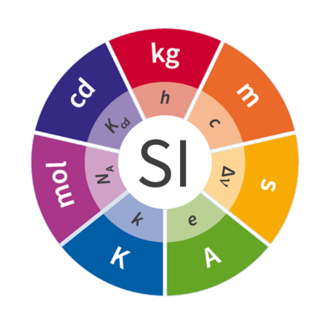
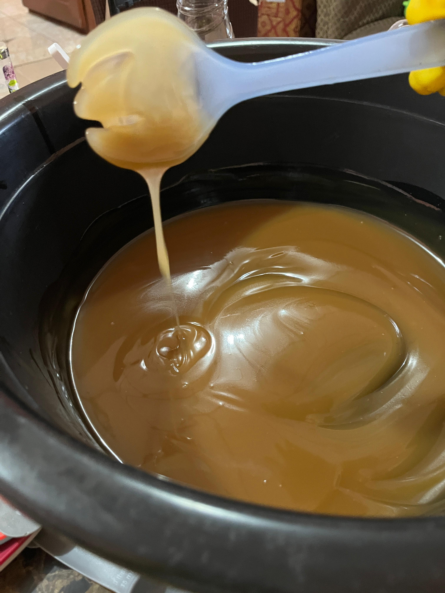
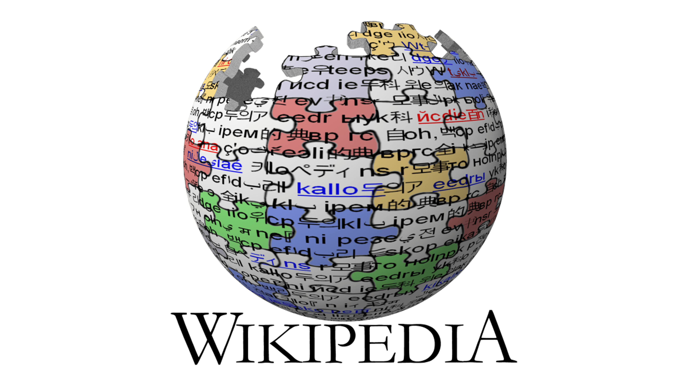

PRESENTACIÓN MINISTERIO DE EDUCACIÓNINSTITUTO DAVID BACHILLER TECNOLÓGICO2025 ELABORADO POR: Juan Soto Sofia Vergara Samuel Cedeño Rodney Gonzáles Gabriel Rosario PROFESORA: Zulma Gómez Grado: 10°M
INTRODUCCIÓN A LA WEB Esta página web es un proyecto de ciencias integradas que tiene como objetivo presentar información sobre el sistema internacional de unidades (SI).
 Introducción al Sistema Internacional (SI) y la base para comprenderlo Introducción Qué es medir. Fundamentos de la medición. Unidades. Magnitudes. Equivalencias. Masa y peso Definición. Diferencia entre masa y peso. Cómo medirlos. Ejemplos prácticos. Densidad ¿Qué es? Fórmula y cálculo. Ejemplos con distintos materiales. Temperatura ¿Qué es? Escalas. Conversión entre escalas. Ejemplos prácticos.
 Elaboración por Saponificación con NaOH Fundamentos y contexto Introducción: de qué trata el proyecto. Objetivo general y específicos. Marco teórico. Importancia y expectativas del experimento. Ejecución del experimento Introducción: de qué trata el proyecto. Objetivo general y específicos. Marco teórico. Importancia y expectativas del experimento. Observaciones, análisis y conclusiones Cambios físicos y químicos observados. Explicación científica de cada cambio. Comparación de resultados. Conclusiones finales y aprendizaje. Posibles mejoras y aplicaciones.
 Webgrafías del SI y de la elaboración de jabones. SISTEMA INTERNACIONAL (SI) Wikipedia. Sistema Internacional de Unidades. Disponible en: https://es.wikipedia.org/wiki/Sistema_Internacional_de_Unidades Instituto Nacional de Metrología de España (CEM). Magnitudes físicas y unidades. Disponible en: https://www.cem.es/ Khan Academy. Masa y peso. Disponible en: https://es.khanacademy.org/science/physics Wikipedia. Densidad. Disponible en: https://es.wikipedia.org/wiki/Densidad Universidad Nacional Autónoma de México (UNAM). Volumen y métodos de medición. Disponible en: https://www.unam.mx/ Wikipedia. Temperatura. Disponible en: https://es.wikipedia.org/wiki/Calor National Institute of Standards and Technology (NIST). Units and Measurement Standards. Disponible en: https://www.nist.gov/ ELABORACIÓN DE JABONES Wikipedia. Saponificación. Disponible en: https://es.wikipedia.org/wiki/Saponificación Ecología Verde. Cómo hacer jabón artesanal. Disponible en: https://www.ecologiaverde.com/como-hacer-jabon-artesanal/ Quimitube. Reacción de saponificación: explicación y ejemplos. Disponible en: https://www.quimitube.com/ Hacer Jabón. Guía básica para la elaboración de jabón casero. Disponible en: https://hacerjabon.com/ ScienceDirect. Soap manufacture and saponification process. Disponible en: https://www.sciencedirect.com/